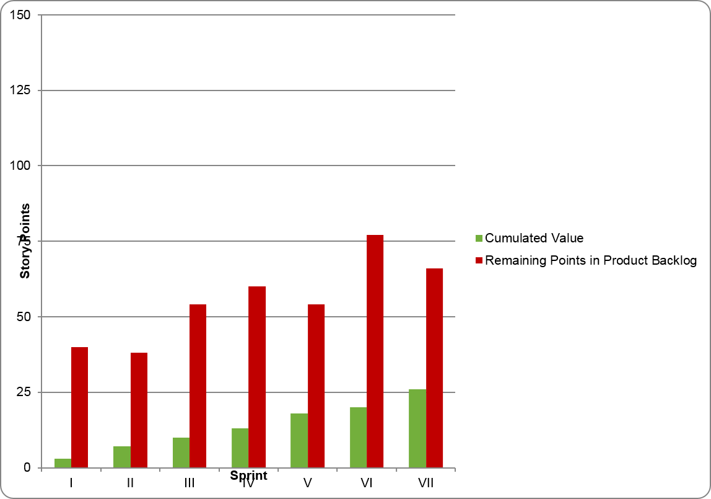
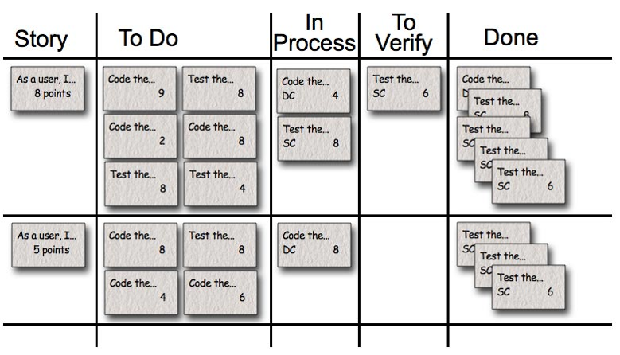
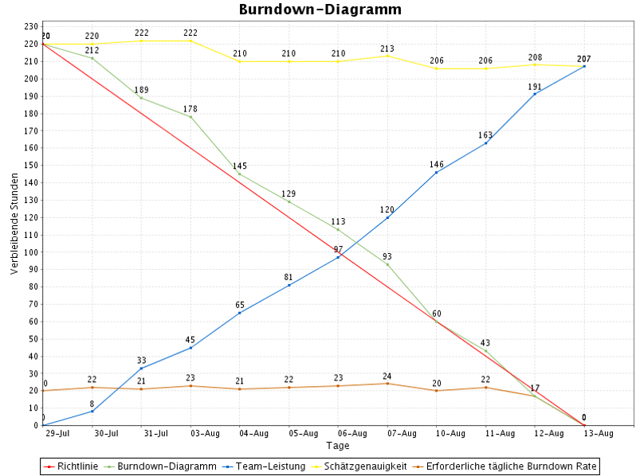
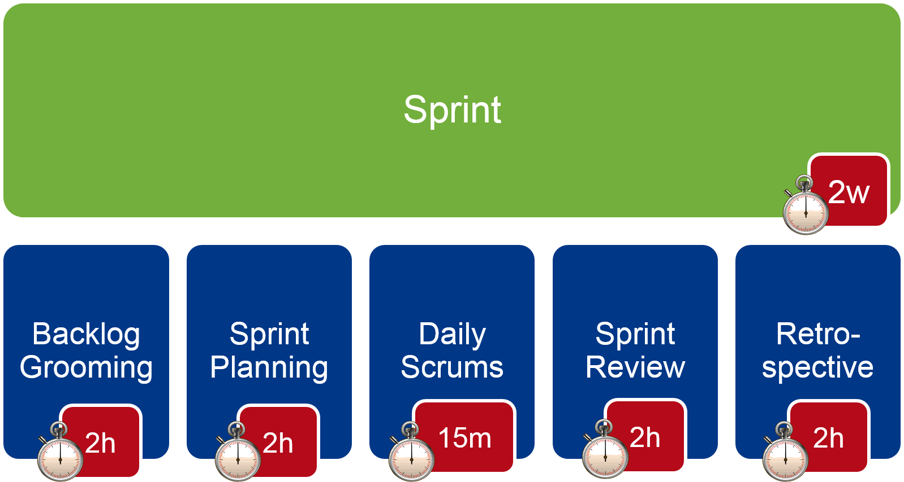

Scrum for developers
Scrum Fundamentals
Product/Release Burn-Down Chart
A Burn-Down chart shows
- What has been achieved
- What is left to do
For a release, it shows remaining features to complete for a release
|

|
Velocity
- Used by the Product Owner to provice forecasts
- Used by the Development Team to gauge how much work to pull in a Sprint Planning meeting
|

|
Task Board
- Task status and responsibility
- Continuously updated: New Tasks are added as they are discovered
- Reestimate remaining effort every day (up or down)
|

|
Sprint Burn-Down Chart
- Daily summation of work remaining in Sprint
- Often goes up before it goes down
- Post for high visibility
- Reflects team intuition
- Not for anyone but the development team
|

|
Scrum events and time boxes (Real World)

Scrum events and time boxes (Training)
Story Points
- Estimates are done in releative, unitless values
- You estimate only in relations, not absolutely
- Estimation can be done
- By Planning Poker (for few or new stories)
- By Affinity Estimation (for a complete product backlog)
- By Magic Estimation (similar to Affinity Estimation)
- Why relative?
- Story points stay constant over time
- The teams velocity can change
- Story points normalize skill level
- Story points normalize done level
Planning Poker
- Product Owner presents and reads a new story
- Every Development Team member chooses a card (1,2,3,5,8,13,20,40,100,?)
- When everybody is ready, all cards are revealed
- Are all cards in range of three (1-3, 2-5, 3-8, 5-13,...)?
- If yes, continue at step 1
- If no, Players with highest and lowest cards discuss their views for a moment. Then continue with step 2.
Feature Branch vs. Trunk Based Development
Feature Branches |
Trunk Based Development |
| What happens if the first story is the one that could not be finished? |
Unfinished Stories are a problem:
- Rollback?
- Secret Delivery? ("Won't Hurt")
|
| Easy branches and merges with a DVCS. Like Mercurial or Git |
Unfinished Features
- Solution: Feature Toggles?
|
Continuous Integration:
- Make Stories small enough
- Have CI for every branch
|
|
Merging is a PITA
| |
Every commit should be integrated immediately
| |
Martin Fowler: Inhibits refactoring (big, daring merge coming ahead!)
| |
Project Setup & Dependendy Management
Expectations:
- Quickly find and add new dependencies
- Find out transitive dependencies
- Detect dependency conflicts
- All projects follow the same conventions
- Allows self-contained CI
|
Definition of Done:
- projects follow conventions
- dependencies are managed
- no binaries in source repository
- sources are under version control
|
Convention and automation
Convention over configuration - Standardized
- project structure
- build process
- release process
- CI integration
Automation is necessary for short iterations. Steps to automate:
- Compile source code
- Execute unit tests
- Gather static code metrics
- Package artifacts
- Generate technical reports and documentation
- Create versions and releases
- Deploy to various target environments
- Execute acceptance tests
Release Management
Expectations:
- A meaningful version number
- Handle unfinished stories
- Installation and migration instructions are maintained
- Release notes that communicate what's new in each release
|
Definition of Done:
- stories are developed in branches
- version number is incremented
- release notes are updated
- production database is migrated (whithout loss of production data)
- projects follow conventions
- dependencies are managed
- no binaries in source repository
- sources are under version control
|
Release Version Numbers
major.sprint.maintenance → 1.2.0
Version Component |
Meaning |
| Major |
Gets incremented with every release. Backwards compatibility is often broken between releases, but should be documented.
Starts at 1. |
| Sprint |
Every sprint has its own number.
Starts at 1. |
| Maintenance |
Increases with every bugfix release. All Releases after this must include
all previous updates.
Starts at 0. |
Release Process with maven
Steps for a new release (at the end of each sprint)
- Set Version in all pom.xml files to the next release number (e.g. from 1.4.0-SNAPSHOT to 1.4.0)
- Build project (to check if everything is working)
- Commit and push (make sure you are on the master branch)
- Create tag (and push it)
- Let Jenkins build and deploy release artifacts
To restart work on a new release (at the start of the new Sprint)
- Set version in all pom.xml files to the next SNAPSHOT number (e.g. from 1.4.0 to 1.5.0-SNAPSHOT)
- Commit and push
- Merge changes into all open feature branches
Maven release plugin
There is a maven plugin to automate the release process:
- Check for uncommited changes
- Perform build to verify that the project is ok
- Update version from snapshit to release; commit changes (1.3.7-SNAPSHOT → 1.3.7)
- Create tag for the new releas
- Update version to next snapshot; commit changes
- Checkout of release tag is performed in new temp directory;
build is performed and artifacts deployed
Problems
- Unstable and error-prone
- Hard to rsoll back / reset after failed releas
- Not possible to le CI build release artifacts
Solution: Don't use the maven-release plugin!
Release migration
- The assumptions an application makes about its environment will change
- Migration can become necessary after every Sprint
- Changes to the database schema
- Data needs to be migrated
- Data migration scripts must be tested
- Environment configuration changed
- JNDI bindung, JMS resources, environment variables, etc.
- Environment itself changed
- Platform is updated
- Systems that are used are updated (or removed)
- Every Release requires an installation and/or migration guide
- Notes should contain the full history (to allow skipping versions)
- Acceptance tests should test the migration process, too
- Can only be partly automated
Tool supported release migration
Tools can be used to support the release migration
Know your process
- Before you automate your release, do it manually often
- Understand the steps and their importance
DB Migration
- Store applied migration scripts in the database itself
- Make scripts check agains version of the database schema
- Tool opportunity: Liquibase
Release Notes
- Integrate various sources: Wiki, Issue Tracking, Project Configuration (POM)
- Tool opportunity: Maven Changes Plugin
Automated DB Migration
- “Liquibase is an open source (Apache 2.0 Licensed), database-independent library for tracking, managing and applying database changes”
- Each database change is version controlled and a part of the sources
- XML Style Changeset descriptions
- Automated rollback support for most commands
<changeSet id="1.4.0-borrowing" author="daniel.arndt">
<createTable tableName="Borrowing">
<column name="id" autoIncrement="true" type="bigint(20)">
<constraints primaryKey="true" nullable="false" />
</column>
...
</createTable>
Automated DB Migration (2)
Various integration options (Ant, Maven, Command Line, Spring, ServletListener, ...)
Some Maven Goals |
Description |
| liquibase:update |
Update the database to the latest version |
| liquibase:updateSql |
Generate SQL for updating to the latest version |
| liquibase:tag |
Create a tag in the database for rolling back later |
| liquibase:rollback |
rollback changesets (last, to date, to tag) |
| liquibase:status |
Display status of target database |
| liquibase:diff |
Diff two databases or database to hibernate config |
| liquibase:help |
Description of all Maven goals |
Maven managed Release notes
- Maven Changes Plugin generates release note reports and integrates it to the project Maven site
- Sends the release notes via email as a release announcement
- Extracts changes from your issue management system automatically
- Extracts changes from changes.xml file in the project sources
Maven Goal |
Description |
| changes:announcement-generate |
Generate a release announcement |
| changes:announcement-mail |
Send a release announcement via email |
| changes:changes-report |
Create a report with changes between different releases of the project |
| changes:jira-report |
Create a report from the issues in a remote JIRA instance |
Release Notes Sample

Continuous Integration
Expectations:
- Fast feedback for everybody about integration status
- pics up changes to version control automatically
- uses same build environment as local developer
|
Definition of Done:
- master branch is built on CI server
- stories are developed in branches
- version number is incremented
- release notes are updated
- production database is migrated (whithout loss of production data)
- projects follow conventions
- dependencies are managed
- no binaries in source repository
- sources are under version control
|